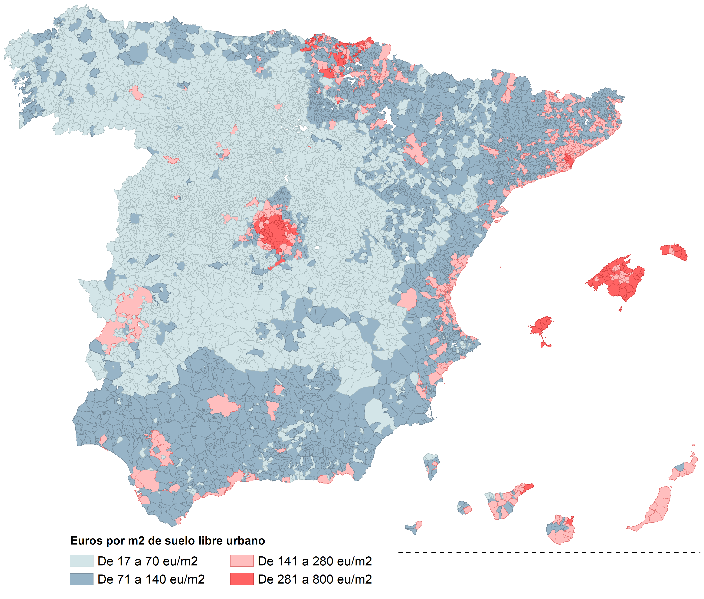

↑ Price of urban land and building licenses, Spain.
Left axis: total number of building licenses.
Right axis: price of land in euros per square meter.
↑ Building licenses according to type of permit: build (new), reform or demolition.
↑ Building licenses by type of requester: legal (private) entities, individuals or public entities.
↑ House and land velocity ratio: The velocity is a measurement of the rate at which the current stock (house or land) is exchanged. The lower the value, the higher the velocity. A ratio of (x) means that it would take (x) years to exchange the stock at current speed.

↑ Urban land price index: For an approach to land price, please see this
entry.
Data sources
Construction and Building Permits (11.Visados de dirección de obra. Nº visados según tipo de obra; 7.Visados de dirección de obra: Obra nueva, ampliación y/o reforma. Nº de viviendas según clase de promotor):
Link
Prices and transactions of land (Series estadísticas > Precios del suelo > 4.Precio medio del metro cuadrado de suelo urbano por comunidades autónomas y provincias):
Link
Total urban land area (Resultados nacionales > Por intervalos población y superficies parcelas urbanas):
Link